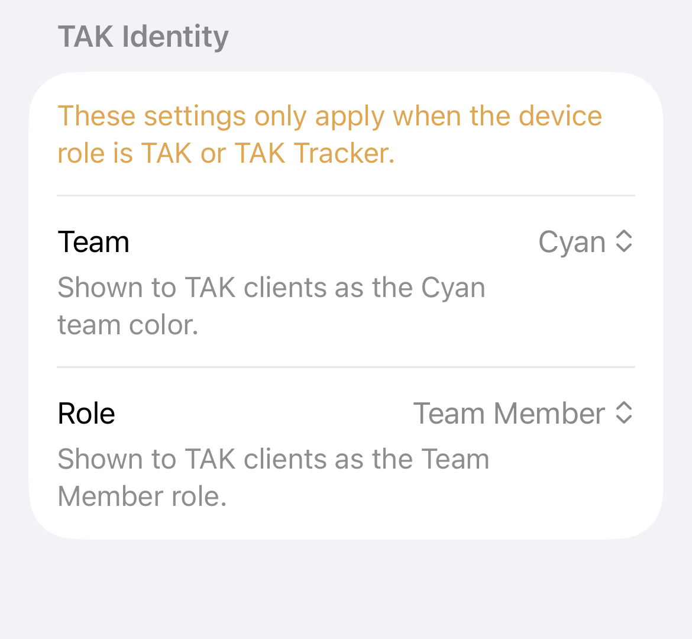

The Meshtastic app supports Team Awareness Kit (TAK) integration, enabling interoperability with ATAK (Android Team Awareness Kit), iTAK, and other CoT (Cursor-on-Target) compatible systems over LoRa mesh radio — no cellular or internet required.
TAK is a situational awareness platform widely used in tactical, emergency management, and outdoor recreation contexts. It displays the positions and status of team members on a shared map. Meshtastic bridges TAK users over LoRa, so teams stay connected without requiring cellular or internet coverage.
TAK integration works with two device roles:
| Icon | Role | Description |
|---|---|---|
|
TAK | Full TAK role — sends CoT position reports and can relay TAK data packets. |
| TAK Tracker | Lightweight position-only TAK role. Lower power consumption, no packet relay. |
Set the device role in Settings → Device.
Settings → TAK Server is the single destination for everything TAK-related. The screen is organised top-to-bottom so you can configure your identity, start the server, and pair an ATAK / iTAK client in one pass.
The first section, TAK Identity, controls the firmware-level team and role identity the radio attaches to every position report:
| Setting | Description |
|---|---|
| Team | The team color shown to TAK clients. Default is Cyan; all standard ATAK team colors are available. |
| Role | Your TAK role. Choices are Team Member (default), Team Lead, HQ, Sniper, Medic, Forward Observer, RTO, and K9. |

A Save TAK Identity button appears in the section only when there are unsaved changes. Saving dispatches an admin message to the connected node; you'll see the change reflected in TAK clients on the next position report.
Below the identity section:
Import a P12 (PKCS#12) or PEM bundle for mTLS-protected ATAK / iTAK connections. The app stores the certificates encrypted in the keychain — they're not visible to other apps or to iTunes/Finder file sharing.
Export a TAK data package zip that you can sideload into ATAK / iTAK. The client uses it to find and trust the app's local server without manually entering a host, port, or certificate.
When another node on the mesh sends a route CoT (b-m-r), the app automatically writes it as a KML data package to Documents/TAK Routes/ and posts an iOS notification so you don't miss it:
| Field | Content |
|---|---|
| Title | Route Received |
| Subtitle | route callsign (or "Unknown Route") |
| Body | Saved to Files → Meshtastic → TAK Routes. Open in iTAK to import. |
iTAK silently ignores route CoT received over its TCP streaming connection, so this fallback lets you import the route manually. Tap the notification, then in Files navigate to On My iPhone → Meshtastic → TAK Routes, share the .zip to iTAK, and choose Import Mission Package.
TAK Routes folder is created the first time a route arrives. If you don't see it, no routes have been received yet. The KML inside the zip is a standard KML 2.2 LineString — you can also open it in Google Earth or any KML viewer.You don't need to configure anything: the app automatically picks the best TAK wire format your radio supports. Firmware 2.8.0+ uses the new V2 format with zstd-dictionary compression for richer message types and shorter LoRa transmissions. Older firmware keeps using the legacy V1 format, which carries PLI and GeoChat between any two nodes plus a richer Apple-to-Apple fallback for shapes, markers, and routes.
Developers and curious users can read the full protocol detail in TAK Protocol.
TAK client won't connect
Routes don't show up in iTAK
TAK Routes folder is missing, no route CoT has arrived yet.Identity pickers are disabled